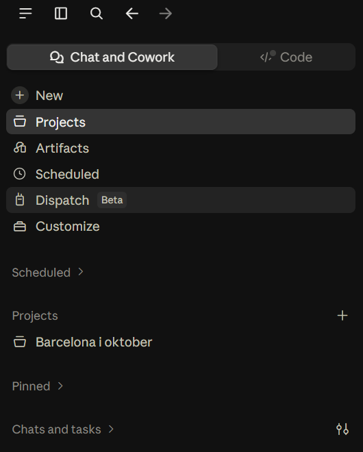
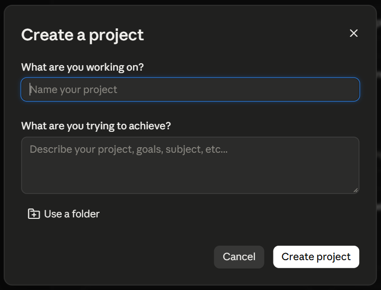
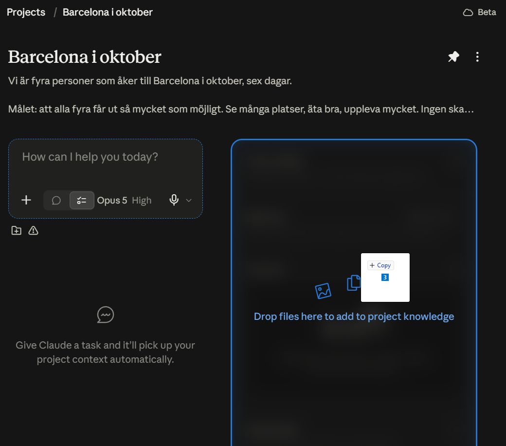
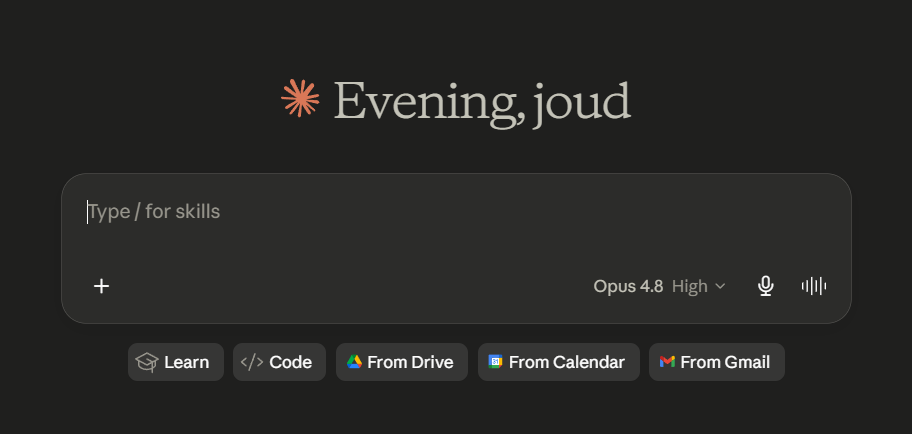
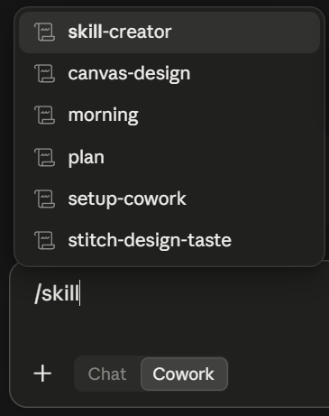
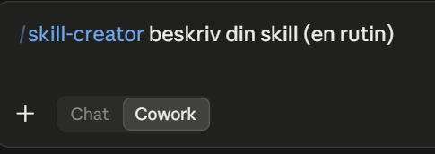
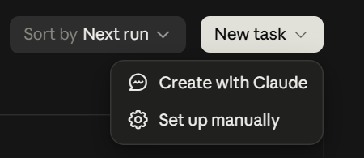
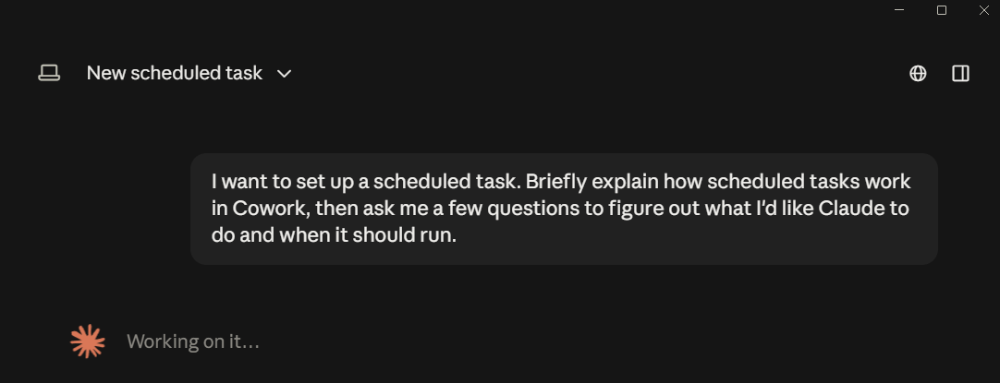
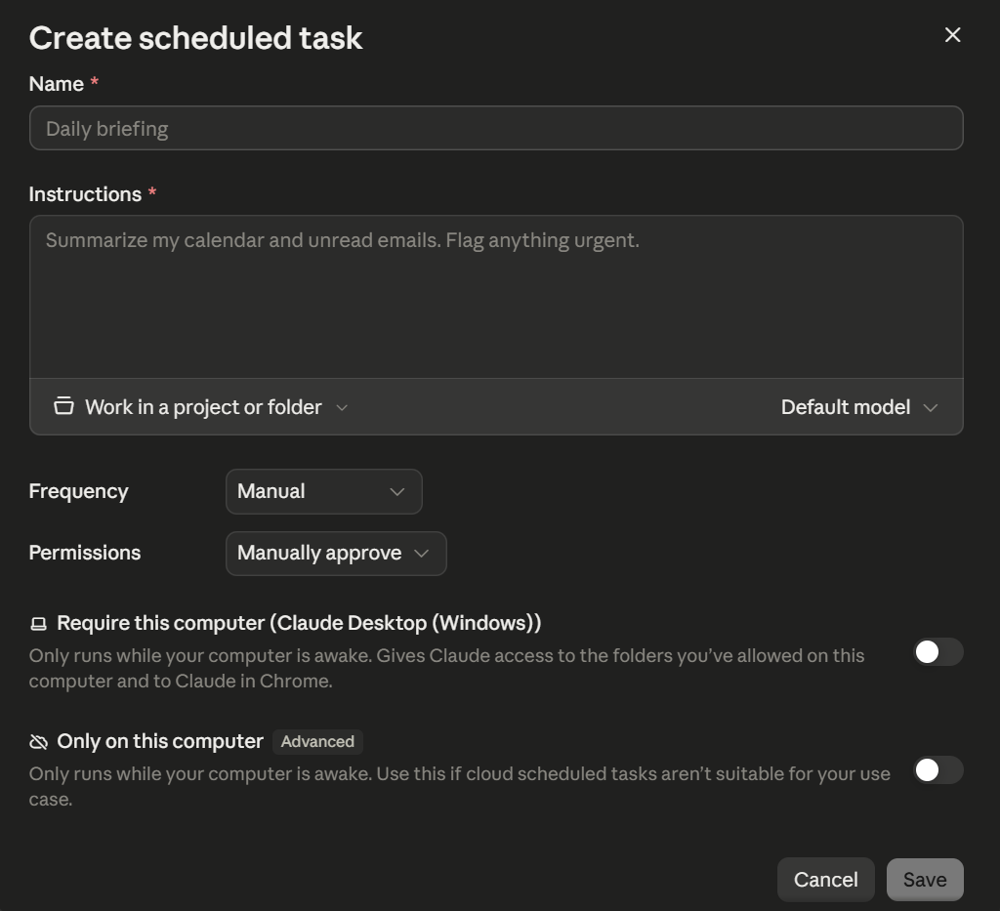
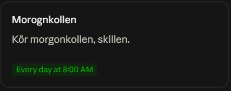

Det här är de tre delarna vi gick igenom på workshoppen, nedskrivna så att du kan göra om dem i lugn och ro. Projektet håller sammanhanget, skillen håller rutinen, schemat kör den åt dig. Räkna med en halvtimme för alla tre, och börja med den du har mest nytta av på måndag.
Här ligger materialet och sammanhanget. Egna filer, egna instruktioner, eget minne. Allt du lägger in gör nästa uppgift bättre.
Rutinen skriven en gång och följd varje gång. Utan den förklarar du samma sak för Claude varje måndag.
När den dyker upp av sig själv, utan att du ber om det. Uppgiften kör på sin tid även om datorn ligger avstängd.
En vanlig chatt börjar om från noll varje gång. Ett projekt gör inte det. Det du lägger in idag ligger kvar imorgon, och minnet är påslaget från början, så Claude tar med sig det du gjorde förra gången in i nästa uppgift. Informationen växer på hög. Efter tre veckor kan projektet ditt företag bättre än det gjorde dag ett, och det är hela skälet till att den här delen kommer först.
Projekten ligger i menyn till vänster. Samma meny bär resten av guiden: Scheduled i del 3 sitter tre rader ner.

Knappen sitter uppe till höger på projektsidan. Rutan som öppnas heter Create a project och frågar två saker: vad du jobbar med, och vad du vill uppnå. Det första är namnet, det andra är målet. Skriv målet som du hade sagt det till en ny medarbetare första dagen på jobbet. Inte "marknadsföring", utan "hjälpa mig få fler bokningar från Instagram utan att jag sitter med det på kvällarna". Ju mer du skriver om målet, desto bättre. Fem meningar slår fem ord.
Ska projektet jobba mot en mapp som redan ligger på din dator väljer du Use a folder här nere i samma ruta. Då kommer Claude åt filerna direkt i stället för att du laddar upp dem en och en.

Kontext är materialet Claude ska kunna utantill: prislistan, offertmallen, hur du skriver till kunder, vilka du säljer till, vad du inte gör. Öppna projektet och dra filerna rakt in i fönstret. De landar i projektets kunskap, och Claude plockar upp dem av sig själv i varje uppgift du kör i projektet. Du behöver alltså inte bifoga dem igen nästa gång.
Det här är den del folk hoppar över, och det är också den som avgör om svaren blir generiska eller träffsäkra.

I projektets instruktioner skriver du att Claude alltid ska uppdatera kontextfilerna när något nytt kommer fram.
Utan den raden lär sig projektet bara det du själv kommer ihåg att mata in. Med den skriver Claude ner nya priser, nya beslut och nya kundfakta åt dig medan du jobbar. Det är skillnaden mellan en mapp och en medarbetare som lär sig.
Vet du inte vad som ska stå i beskrivningen, eller vilka kontextfiler du behöver: låt Claude fråga sig fram till det. Öppna en vanlig chatt, klistra in prompten nedan och svara på frågorna. Du får tillbaka namnet, instruktionerna och filerna färdiga att klistra in.

Jag ska skapa ett projekt i Claude för mitt företag. Innan du föreslår någonting: ställ frågor till mig, en i taget, tills du har hela bilden. Vad jag gör, vilka mina kunder är, hur jag jobbar idag, vad som tar mest tid och vad jag vill att projektet ska hjälpa mig med. Fortsätt fråga tills du inte har fler frågor. När du har hela bilden, ge mig tre saker: 1. Ett namn på projektet. 2. En beskrivning och instruktioner som jag kan klistra in i projektet. Ta med en rad om att du alltid ska uppdatera kontextfilerna när något nytt kommer fram. 3. Kontextfilerna projektet behöver, en i taget, med färdigt innehåll som jag kan spara som filer. Skriv på svenska och i vanliga ord.
Anthropics egen tumregel är enkel: allmänna regler hör hemma i instruktionerna, en rutin du gör om och om igen hör hemma i en skill. Har du gjort samma sak tre gånger är det en skill. Det är hela urvalskriteriet, och det är därför den bästa första skillen nästan alltid är något tråkigt du gör varje vecka snarare än något imponerande du gör en gång om året.
Ta uppgiften du gjorde flest gånger förra månaden. Några som fungerar bra:
Gemensamt för alla fyra: du gör dem ofta, du gör dem likadant, och de tar tid varje gång. Det är där en skill betalar sig.
Tryck på New och skriv / i textrutan, så listas dina skills. Välj skill-creator, den som bygger nya skills åt dig. Se till att Cowork är valt i rutan, inte Chat.

Skriv på svenska, precis som du hade förklarat det för en ny anställd. Du behöver inte kunna något tekniskt och du ska inte försöka låta som en programmerare.

Claude frågar hur du gör i dag, vad som skiljer ett bra resultat från ett dåligt, och vilka mallar den ska utgå från. Har du ett färdigt exempel, ge det. En riktig offert eller en riktig månadsrapport gör mer för resultatet än tio meningar om hur den borde se ut. Sedan bygger Claude skillen och paketerar den åt dig.
Be om jobbet i vanliga ord och se om skillen går igång. Gör den inte det är beskrivningen för vag: den ska tala om när skillen ska användas, inte bara vad den gör. Be Claude skriva om beskrivningen, det tar trettio sekunder.
Skillen är en fil. Den sitter inte fast i din chatt, du kan flytta den, spara den och ge bort den. Anställer du någon behöver du inte lära ut rutinen muntligt i tre veckor, du ger dem skillen och de gör den rätt första dagen. På Team och Enterprise delar du den direkt till en kollega. Bygger du en skill i månaden har du om ett år ett bibliotek över hur ditt företag faktiskt jobbar, och det biblioteket följer med dig.
Det här är steget som gör skillnad mellan ett verktyg du öppnar och en medarbetare som dyker upp. Schemalagda uppgifter körs i molnet som standard, inte på din dator, så de går igång på sin tid även om datorn är avstängd och ligger i väskan. Undantaget står längst ner i formuläret: ska uppgiften komma åt filer på din egen dator eller din webbläsare slår du på Require this computer, och då måste datorn vara igång.
Scheduled ligger i vänstermenyn. När du trycker på New task får du två alternativ: Create with Claude eller Set up manually. Båda leder till samma sak, skillnaden är bara om du vill skriva formuläret själv.
Längre ner på samma sida ligger färdiga förslag, som en daglig genomgång av kalender och mejl eller en sammanfattning varje fredag. Vill du bara komma igång är det snabbaste att starta från ett av dem och ändra texten.

En ny uppgift öppnas med frågan redan ifylld åt dig. Claude förklarar kort hur schemalagda uppgifter fungerar och ställer sedan några frågor för att få reda på vad du vill ha gjort och när. Du svarar, Claude föreslår den färdiga uppgiften och du bekräftar. Det är hela momentet. Är du osäker på hur ofta något bör köras är det här vägen att ta, för då kan du fråga.

Formuläret heter Create scheduled task. Bara två fält är obligatoriska: Name och Instructions. Sedan väljer du Frequency, hur ofta den ska köra, och Permissions, om den ska fråga dig innan den gör något eller köra på egen hand.
Under instruktionerna sitter Work in a project or folder. Det är där du pekar uppgiften mot projektet du byggde i del 1, så att den får med sig allt materialet i stället för att börja tomhänt varje morgon.

Det här är tipset som knyter ihop guiden.
En schemalagd uppgift kommer åt samma saker som en vanlig uppgift, inklusive dina skills. I stället för att beskriva jobbet en gång till pekar du på rutinen du redan byggde i del 2. Projektet håller sammanhanget, skillen håller hur det ska göras, schemat håller när. Då har du en medarbetare i stället för tre verktyg.

Ta uppgiften du gjorde flest gånger förra veckan. Gör en skill av just den. Lägg den i ett projekt med materialet den behöver. Schemalägg den. Det är en kväll, och sedan sköter den sig själv.
Tre halvfärdiga system är mindre värda än ett som går igång på måndag. Fastnar du, hör av dig nedan.
Jag hjälper dig komma igång, från första frågan till färdig rutin. Hör av dig så tar vi reda på om och var AI passar för dig eller ditt företag.
Boka ett strategisamtal